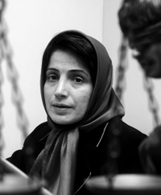

|
|
صدوربیانیه پن بین الملل برای آزادی نسرین ستوده و انتخاب وی به عنوان عضو افتخاری پن سوئد
پنج شنبه23 دی 1389

تغییر برای برابری - کمیته نویسندگان دربند پن بین الملل با صدور بیانیه ای در 12 ژانویه 2011 حکم صادره برای نسرین ستوده وکیل مدافع بنام درزمینه حقوق بشر، نویسنده و روزنامه نگار دایر بر 11 سال زندان و 20 سال محرومیت از وکالت و خروج از کشور را محکوم کرد.
پن بین الملل معتقد است که نسرین ستوده صرفا به دلیل اعمال مسالمت آمیز حق خود در آزادی بیان محکوم شده است. حق آزادی بیان در ماده 19 میثاق بین المللی حقوق مدنی و سیاسی که ایران از امضا کنندگان آن است تضمین شده است. در این بیانیه پن بین الملل ضمن علام نگرانی از ادامه دسنگیری ها در ایران و صدور حکم زندان طولانی برای بسیاری از افراد خواستار آزادی فوری و بی قید و شرط نسرین ستوده شده است. رونوشتی از این بیانیه برای مقامات ایرانی نیز ارسال شده است.
بدنبال صدور بیانیه پن بین الملل، پن سوئد نیز طی اطلاعیه ای امروز 13 ژانویه2011 اعلام کرد که نسرین ستوده به عنوان عضو افتخاری پن سوئد برگزیده شده است. آذرمحلوجیان رئیس کمیته نویسندگان دربند پن سوئد، دراین باره گفت :« نسرین ستوده که همواره از حقوق موکلین خود در رابطه با آزادی بیان و حقوق بشر دفاع می کرد خود از این حقوق محروم شده است. او با مبارزت پی گیر خود در زندان و اعتصاب غذا صدای اعتراضش را به همه جهان رساند. انتخاب او به عنوان عضو افتخاری پن سوئد، به این معناست که پن سوئد ازاین پس پی گیر وضعیت حقوقی نسرین ستوده و خواهان آزادی وی خواهد بود.»